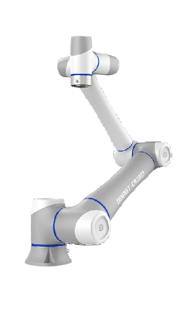

Robô industrial • múltiplos eixos
Robô Articulado
Robô com várias articulações que proporcionam grande liberdade de movimento.

Conceito
Os robôs articulados são os mais comuns na indústria, possuindo múltiplos eixos que permitem movimentos complexos, semelhantes ao braço humano.
Princípio de funcionamento
Utilizam servomotores para controlar cada articulação, permitindo movimentos precisos e coordenados em diferentes direções.
Principais características técnicas
- Vários graus de liberdade
- Grande flexibilidade
- Amplo alcance
- Alta precisão
Vantagens
- Alta versatilidade
- Capacidade de executar tarefas complexas
- Amplo campo de aplicação
Desvantagens
- Custo elevado
- Programação mais complexa
- Manutenção especializada
Aplicações industriais
Utilizados em soldagem, pintura, montagem, corte e manipulação de materiais pesados.
Integração com IoT
Permitem monitoramento de desempenho, consumo de energia e manutenção preditiva.